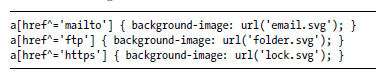
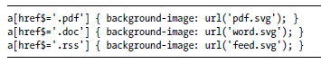
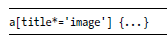
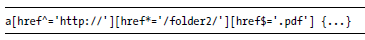

Hoofdstuk 3: selectors
Inleiding
Zoals je al merkte in de CSS-bestanden bij formulieren, is er op het vlak van selectors veel gewijzigd in CSS3. Een leuke inleiding over de nieuwe selectors krijg je via flukeout.github.io. Neem deze interactieve handleiding door en noteer de theorie die je nog niet kende.
Er zijn zoals je merkt veel selectors bijgekomen.
Selecteren op basis van attributen
Je kunt nu ook selecteren op (een stuk van) een attribuut van een element.
- ^= staat voor 'begint met'
- $= staat voor 'eindigt op'
- *= staat voor 'bevat'
Wanneer je naargelang het gebruikte protocoldeel in de hyperlinks een ander prentje wil tonen:

Wanneer je naargelang de extensie van het bestand dat gedownload kan worden, een ander prentje wil tonen:

Wanneer je elke link wil selecteren die ergens in het attribuut ‘title’ de tekst ‘image’ bevat:

Je kunt deze attribuuttesten ook combineren. Alleen een http://-link naar een pdf-bestand ergens in de map folder2 zal nu een andere opmaak krijgen.

Een paar voorbeelden
Overzicht selectors
-
.class
Selects all elements with .class
-
#id
Selects all elements with #id
-
*
Selects all elements
-
div
Selects all <div> elements
-
div, p
Selects all <div> and <p> elements
-
div p
Selects all <p> in <div> elements
-
div > p
Selects all <p> elements that are a direct descendant of a <div> element
-
div + p
Selects all <p> elements that are the next sibling of (i.e. placed directly after) <div> elements
-
div ~ p
Selects all <p> elements that follow, and are siblings of, <div> elements
Overzicht attributen
-
[attribute]
Selects all elements with the specified attribute
-
[attribute="value"]
Selects all elements where the specified attribute is equal to "value"
-
[attribute~="value"]
Selects all elements with the specified attribute containing the word "value"
-
[attribute^="value"]
Selects all elements with the specified attribute beginning with "value"
-
[attribute$="value"]
Selects all elements with the specified attribute ending with "value"
-
[attribute*="value"]
Selects all elements with the specified attribute containing the substring "value"